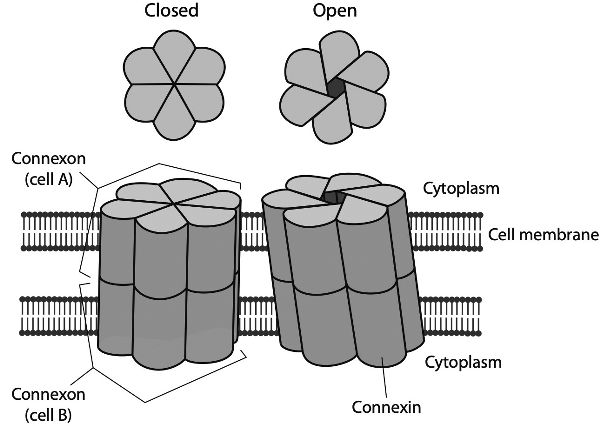
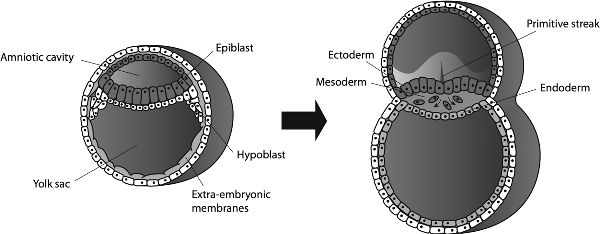
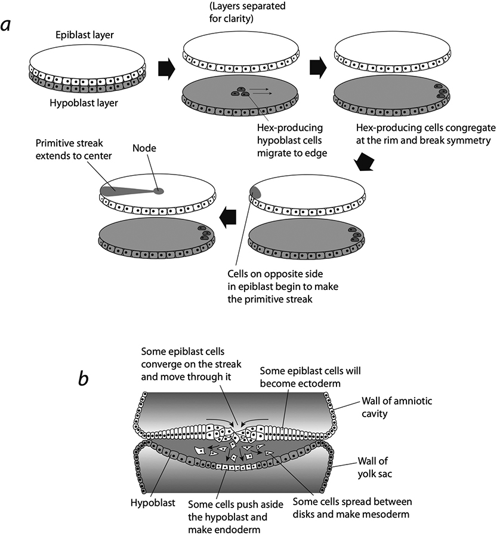
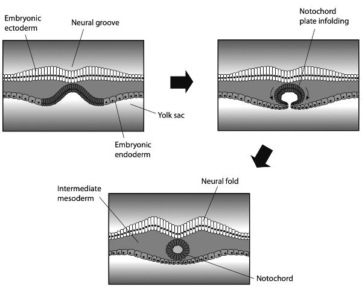
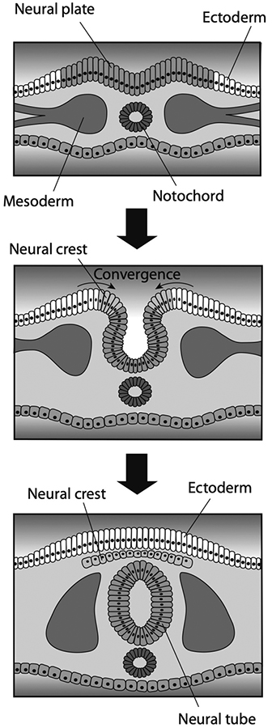
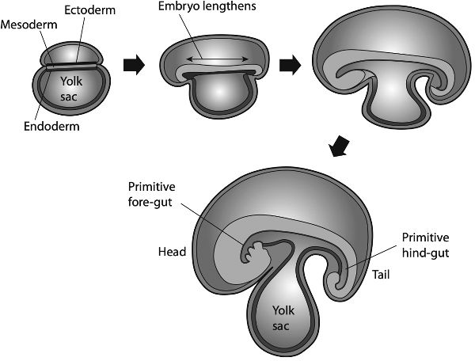
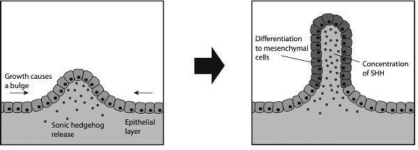
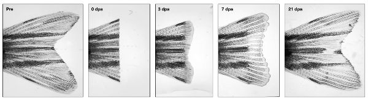

How Life Works · תרגום עברי · Gemini
7 רקמות
הדבר הוודאי היחיד בחיים, כך אומרים לנו, הוא המוות. אבל אולי לא אם אתם פלנריה. לתולעים השטוחות הזעירות הללו, שמינים רבים שלהן חיים הן במים מתוקים והן במים מלוחים, יש מעין אלמוות. אם תקצצו פלנריה ליותר ממאה פיסות זעירות, כל מקטע יצמח לתולעת חדשה. אין גבול ידוע ליכולתן של הפלנריות להתחדש אחרי השחתה קיצונית שכזו. אם תחתכו גוש מתוך תולעת יחידה, הפצע יחלים באמצעות הצמחה מחדש של החלק החסר בדיוק. חתכו אחת מהן לאורכה באמצע, כך שהראש והגוף ייחצו לשניים, וכל מחצית תצמח לתולעת חדשה. והפלנריות אינן סתם גושים של חומר חי מתחדש. הן בעלי חיים מורכבים למדי, בעלי מוח ומערכת עצבים, עיניים, פה ומעי. ובכל זאת כל אלה מתחדשים בדיוק כמו במקור. נדמה כאילו כל חלקיק זעיר של הפלנריה אצר בתוכו זיכרון של השלם, כך שהוא יכול להשלים את מה שחסר, לא פחות ולא יותר.
הפלנריות מאתגרות את התפיסות שלנו באשר למה שהחיים יכולים להיות. הן אינן לבד ביכולתן להתחדש — דו־חיים כמו האקסולוטל מסוגלים להצמיח מחדש גפיים חסרות, ויצורים פשוטים יותר דמויי שושנת ים הקרויים הידרה יכולים להתחדש מתוך מקטעים. אולם יכולות התחייה של התולעת השטוחה הן חסרות תקדים בעולם החי במורכבותן וברב־גוניותן. איש אינו יודע כיצד הן עושות זאת. נראה שהתאים שלהן משמרים פלוריפוטנטיות, כלומר יכולת להתרבות ולהתמיין לכל סוג של רקמה. אבל אין בכך די כדי להסביר כיצד בשר הפלנריה ניחן לכאורה ב"זיכרון גוף", היוצר בדיוק את אותם מבנים ובדיוק באותו גודל מתוך נקודות מוצא שונות רבות כל כך. קשה לראות כיצד גנים לבדם יכולים להסביר זאת. כדי להחליף אך ורק את החלקים החסרים, התאים הצומחים חייבים "לדעת" איכשהו מה קיים ומה חסר. נדמה שיש להם תחושה של השלם, ושליחות המורה להם אילו רקמות ואיברים לבנות ומתי לעצור. למושבות חיידקים ולפטריות אין חזון רחב כזה: הן מצטיינות בצמיחה, אך ללא יעד מוגדר כלשהו באופק.
מה יודעים התאים המרכיבים אורגניזם (בנפרד ובמשותף) — וכיצד?
תקשורת תאית הרעיון שתאים הם "אבני הבניין" של הגוף שלנו גורם להם להישמע פסיביים למדי, כמו לבנים שאפשר לערום למבנים של רקמות. למעשה הם חכמים הרבה יותר מזה. כל תא הוא, כפי שראינו, ישות חיה בפני עצמה, המסוגלת להתרבות, לקבל החלטות, ולהגיב ולהסתגל לסביבתה. לחומר החי יש תוכניות משלו, העשויות לדרוש מתאיו לנוע או לשנות את מצבם.
הדבר ניכר באופן בולט בהתפתחותו של אורגניזם חדש — בן אדם, למשל — מתוך זיגוטה. ככל שאותו תא יחיד הופך לשניים, לארבעה, ובסופו של דבר למיליארדים רבים, הוא משתנה ממה שנראה ככדור חסר מבנה של תאים זהים לגוף בעל צורה מוגדרת היטב, המכיל רקמות מובחנות שבהן התאים ממלאים תפקידים שונים: יצירת ההתכווצויות המתואמות של הלב, למשל, או בניית רשתות העצבים החשמליות של המוח, או הפרשת ההורמון אינסולין בלבלב.
כיצד יודע הגוש חסר התווים שהוא העובר המוקדם מה ליצור, והיכן ליצור זאת, אם לא באמצעות הסתמכות על תוכנית מתאר? התשובה היא שתאים מייצרים סדר וצורה באמצעות דיאלוג: על ידי תקשורת זה עם זה ותגובה זה לזה. כל תא תחום בממברנה המשובצת במולקולות המסוגלות לקלוט אותות המגיעים אל פני התא מבחוץ ולהמיר אותם למסרים בתוך הרשתות הפנימיות של מולקולות הפועלות הדדית בתא. איתות זה מוביל בדרך כלל להפעלה או לדיכוי של גנים מסוימים, וכך משנה את מצבו הפנימי של התא.
ישנם שלושה אופנים עיקריים להעברת האותות החיצוניים הללו. האחד הוא כימי: מולקולה מחוץ לתא מפעפעת אל פני השטח שלו ונקשרת שם לקולטן חלבון, מה שמחולל שינוי כלשהו בצידה הפנימי של הממברנה ומתחיל מפל איתות בתוך התא. זה, למשל, מה שמתרחש בצמתים שבין תאי עצב הקרויים סינפסות. תא עצב אחד, המופעל על ידי דחף חשמלי שעבר אל הסינפסה לאורך האקסון דמוי החוט, משחרר מולקולת מוליך עצבי (נוירוטרנסמיטר) כגון דופמין או סרוטונין. מולקולה זו מפעפעת על פני המרווח המפריד בין תאי העצב בצומת הסינפטי ונקשרת לפני השטח של תא עצב אחר. בדרך כלל, הגעתו של מוליך עצבי מעוררת את תא העצב לייצר דחף חשמלי משלו, או מעכבת אותו מלעשות זאת. גם הורמונים פועלים כמסרים כימיים הנקלטים על ידי קולטנים על פני התא.
הפעילות הפנימית בתא יכולה להשתנות גם בעקבות אותות מכניים: למשל כאשר הממברנה שלו נמתחת כשלצידו תא אחר הנדבק אליו ומושך אותו. בדרך כלל, אותות מכניים אלה עוברים "התמרה" — כלומר מומרים להשפעה פנימית כלשהי — על ידי חלבוני ממברנה המעוצבים כצינורות או כנקבוביות. כאשר מושכים או מוחצים אותם, הם עשויים להיפתח או להיסגר כדי לאפשר או למנוע מעבר של יונים טעונים חשמלית דרך הממברנה אל תוך התא. בשל התנהגות רגישה־מכנית כזו, תרבית תאים עשויה להתפתח באופן שונה כאשר מגדלים אותה על משטח רך (היכול להתעוות בתגובה לרקמה המתפתחת) לעומת משטח קשיח (שאינו יכול).
האופן השלישי של תקשורת תאית הוא חשמלי. הודות ליכולתם לשלוט במעבר יונים דרך הממברנה שלהם, תאים יכולים לעבור קיטוב חשמלי, למשל ליצור חוסר איזון של מטען (כלומר מתח חשמלי) משני עברי הממברנה. כך מלכתחילה נעים דחפים חשמליים לאורך האקסונים דמויי החוט של תאי העצב, באמצעות העברה של יוני נתרן ואשלגן דרך הממברנה. הדבר מתאפשר הודות לחלבונים הקרויים תעלות יונים: מבנים דמויי נקבובית המאפשרים מעבר של יונים מסיסים במים דרך הפנים השומני של הממברנות. תעלות יונים הן בדרך כלל בררניות באשר ליונים שהן מאפשרות להם לעבור — אחדות, למשל, יכניסו יוני נתרן, ואחרות אשלגן. בדרך זו יכולים התאים לשלוט בהפרשי המטען משני צידי הממברנה — כלומר במתח החשמלי שעל פניהם.
אף שאנו נוטים לחשוב על איתות חשמלי כעל תכונה הייחודית לתאי עצב, למעשה זוהי תכונה המשותפת לרוב התאים, משום שתעלות יונים הן נפוצות ועתיקות מבחינה אבולוציונית. תעלות היונים עצמן עשויות להיות רגישות לשדות חשמליים בסביבתן, ולהיפתח ולהיסגר בתגובה לשינויים במתח. פירוש הדבר הוא שמצבו החשמלי של תא אחד יכול להגיב לזה של תא אחר, וליצור לולאות משוב בדומה לאלו שבין רכיבים במעגלים חשמליים, המאפשרות לתאים לבצע מעין חישוב קולקטיבי. האותות החשמליים שתא קולט עשויים לפעול באופן דומה מאוד לאותות כימיים: לחולל תגובות בתוך התא המובילות בסופו של דבר לשינויים בביטוי גנים או בבקרות אפיגנטיות כגון ארגון הכרומטין. בדרך זו יכול איתות ביו־חשמלי לסייע בהכוונת ההתמיינות והצמיחה של האורגניזם.
חלק מהתאים מתקשרים חשמלית באמצעות מה שמכונה צומתי רווח (gap junctions), שבהם הממברנות שלהם שוכנות זו לצד זו כשתעלות חלבון מחברות ביניהן. בחולייתנים חלבונים אלה נקראים קונקסונים (connexons): מבנים גליליים העשויים משש יחידות היכולות לזוז ולשנות צורה כדי להיפתח ולהיסגר כמו צמצם של מצלמה (איור 7.1). הצמידות של הקונקסונים בכל ממברנה משמעותה שיונים ומולקולות קטנות יכולים לעבור בין שני התאים: הם יכולים לחלוק את תכולתם, כך שלמשל תא אחד יכול לשנות את המתח החוצה־ממברנה של תא אחר. גם הם עשויים להיות רגישים למתח וכך לתמוך במעגלים חשמליים בין תאים.
צומתי רווח הם ביסודו של דבר סינפסות, כמו אלו המחברות בין תאי עצב במוח. אך הם מופיעים בכל רחבי הגוף, כמעט בכל סוג של רקמה מוצקה. בשריר הלב הם מאפשרים תקשורת תאית המתירה לגלים מאורגנים בקנה מידה גדול של פעילות חשמלית לפעום ברחבי הרקמה ולהשרות את ההתכווצויות הסדירות של פעימות הלב. אם הגלים החשמליים הללו משתבשים, למשל עקב נזק לרקמה, הפעימות עלולות להידרדר לדחפים חשמליים מפרפרים, בלתי סדירים ובלתי מתואמים — והתוצאה עלולה להיות אי־ספיקת לב.

איור 7.1 צומתי רווח בין תאים נוצרים על ידי היערכות מיושרת של תעלות חלבון הקרויות קונקסונים בממברנות של שני תאים סמוכים. כל קונקסון בנוי משישה חלבונים הקרויים קונקסין, העוברים שינויי קונפורמציה כדי לפתוח ולסגור את התעלות.
יש חוקרים הסבורים כי נוירונים התפתחו כהתאמה ייעודית של תקשורת כזו בין תאים, שאפשרה לשלוח אותות למרחקים גדולים ביצורים רב־תאיים, במקום לפעול רק בין השכנים המיידיים של התא. מכל מקום, המשאבים הגנטיים הדרושים לבניית מערכת עצבים אינם מופיעים כולם בבת אחת ביצורים שניחנו בה: לא פחות מ־30 אחוזים מן הגנים הידועים כמעורבים ביצירת מערכת העצבים של הפלנריה מצויים גם בצמחים ובשמרים. נראה סביר כי קוגניציה הנשענת על תאים ומוחות אינה, במובנים מסוימים, אלא שכלול של היכולות הקוגניטיביות שכל התאים מפגינים, ושהם נעזרים בהן כדי לתאם את פעילויותיהם.
אפילו יצורים חד־תאיים מסוימים משתמשים באיתות חשמלי לשם תיאום. אפשר להבחין בכך, למשל, בשכבות הריריות והעמידות המכונות ביופילם (biofilms), שמושבות חיידקים מסוגלות לייצר. באמצעות חיבורים חשמליים מסנכרנים התאים תנודות בתהליכים המטבוליים שלהם, וכך הם יכולים לחלוק חומרי הזנה ביעילות רבה יותר. איתות כזה עשוי גם להעניק לביופילם מעין זיכרון קולקטיבי של מה שחווה.
כמעט כל הרקמות מסוגלות "לחשב" באמצעות הצימוד החשמלי שלהן. מה הן מחשבות? מייקל לוין סבור שבעיקר הן משלבות מידע כדי לקבוע לאיזו תבנית או צורה לצמוח. לביסוס השקפה זו הראה לוין כי שינויים באיתות הביו־חשמלי יכולים לשנות את המורפולוגיות הנוצרות בהתחדשות של תולעים שטוחות מסוג פלנריה. בניסוי אחד השתמשו הוא ועמיתיו בכימיקלים כדי לשבש את הצימוד החשמלי של תאים במקטעים של פלנריה, וגילו שהם הצמיחו מחדש ראשים בעלי צורה אחרת. מה שמדהים כאן הוא שהשיבוש אינו פשוט משבית את ההתחדשות או גורם לה להתרחש באופן לא מאורגן. אדרבה, הראש (עם כל החיווט הפנימי, העיניים וכן הלאה) צומח באופן מתפקד להפליא, אך בצורה שונה. ולא בצורה שרירותית: החוקרים מצאו שמין אחד של פלנריה יכול להצמיח ראש שנראה בדיוק כמו ראשו של מין אחר של תולעת שטוחה. הדבר דומה למצב שבו (ובמחילה על התרחיש הגרוטסקי) אדם היה מסוגל להצמיח מחדש ראש, אך אפשר היה לגרום לו להצמיח במקום זאת ראש של שימפנזה או אפילו של כלב.
כשמציגים זאת כך, קל להבחין במוזרות שבדבר. אנו נוטים לחשוב שצורת הגוף מאפיינת באופן כלשהו את הגנום: שראשים של אדם, שימפנזה וכלב הם מבנים תלויי־נסיבות לחלוטין שהתפתחו באמצעות כוונון ספציפי מאוד של הגנים המתאימים. אולם ההתמרות הביו־חשמליות של ראשי הפלנריה מרמזות, כך נראה, שלפחות אצל תולעים שטוחות קיים רפרטואר מוגדר של צורות ראש המוכתב על ידי גורמים נוספים מלבד הגנום לבדו. "כעת אנו יכולים לראות ישירות את זיכרון התבנית הביו־חשמלי, שכברירת מחדל אומר 'בנה ראש אחד'", אומר לוין. "כעת אנו יכולים לשנות אותו כך שיאמר 'בנה שני ראשים', או 'ראש של מין אחר'. יש לנו גישה לתווך שבו רקמות מאחסנות תבניות לצמיחה עתידית, ואנו יכולים לשנות אותן – לתקן מומים מוחיים ומומים בפנים ובגולגולת – על ידי הגדרה מחדש של זיכרון הרקמה באשר לצורה הנכונה שעליה ללבוש."
מניפה סופית זו של מצבי צורה מזכירה את האופן שבו לתאים בודדים יש, כמדומה, מצבים מועדפים המקבילים לגורלות תא מסוימים. כפי שראינו, אפשר להבין את ההתמרות הללו כמתרחשות בנוף של אפשרויות בעל פתרונות יציבים מסוימים, המכונים מושכים (attractors). לוין סבור שאותו הדבר עשוי להיות נכון גם כאן: כשם שרשתות של גנים וחלבונים "מחשבות" מצב של תא עם פתרונות מסוימים, כך גם לחישובים הביו־חשמליים של תאי הפלנריה יש מצבים מושכים בנוף מורפוגנטי. אם נשבש את החישובים הללו במידה מספקת – ממש כפי שאנו מערערים את הרשתות הגנטיות של תאים באמצעות הוספת גנים התפתחותיים מרכזיים – אנו עשויים להדוף את המערכת אל עמק אחר בנוף, שיוביל אל מושך אחר.
תפיסה זו של צורתן של רקמות ויצורים כמושכים במרחב הצורות (morphospace) נתמכת בניסויים שערך לוין בצפרדעים. כדי להפוך לצפרדע, על הראשן לארגן מחדש את פניו. בעבר סברו שהגנום של הצפרדע מקודד באופן קשיח מערכת של תנועות תאים עבור כל תו פנים. "היו לי ספקות בנוגע לסיפור הזה", אומר לוין, "אז יצרנו את מה שאנו מכנים 'ראשני פיקאסו'. באמצעות מניפולציה של האותות החשמליים יצרנו ראשנים שבהם הכול היה במקום הלא נכון. הכול היה מבולגן לגמרי, כמו מר תפוח אדמה." ובכל זאת, מתוך הסידור המופשט הזה של תווי פני הראשן, הגיחו צפרדעים תקינות. "במהלך המטמורפוזה, האיברים עושים את דרכם במסלולים חריגים שאינם נעים בהם בדרך כלל, עד שהם מתייצבים במקום הנכון ליצירת פנים תקינות של צפרדע", אומר לוין. נראה כאילו ליצור המתפתח יש תכנון יעד, תוכנית כוללת, שהוא מסוגל להשיג מכל תצורת התחלה. הדבר שונה בתכלית מן התפיסה שלפיה תאים "ממלאים פקודות" בכל צעד וצעד. "יש דרך כלשהי שבה המערכת מאחסנת מפה בקנה מידה גדול של מה שהיא אמורה לבנות", אומר לוין. אלא שהמפה הזו אינה נמצאת בגנום, כי אם במצב קולקטיבי של התאים עצמם, היוצר מדיניות לניווט במרחב המורפולוגי של היצור.
לוין סבור שאיתות ביו־חשמלי יכול אפוא לתמוך בסוג של עיבוד מידע לא־עצבי – שאולי אף מעורב בבניית המוח עצמו. הוא ועמיתיו הראו שצמיחת הרשת העצבית של המוח נשלטת, ככל הנראה, על ידי המתח משני עברי הממברנה של התאים שיהפכו לנוירונים. החוקרים שיבשו גן מפתח בשם Notch, המשרה על התאים להפוך לנוירונים בעוברי צפרדעים, ובכך חיבלו לחלוטין בהתפתחות המוח. אולם הם הצליחו לשקם אותה פשוט על ידי שינוי מתח הממברנה של תאים סמוכים אחרים. במילים אחרות, האות הביו־חשמלי יכול היה לגבור על המסר המחלחל מן הגנים ולהשאיר את המורפוגנזה התקינה של העובר על מסלולה. או ליתר דיוק, אפשר לומר שמתח הממברנה מעביר מידע שחשוב לתא לא פחות מפעילויותיהם של גנים. המשמעות של מולקולת איתות התפתחותית כלשהי, כגון Notch, Wnt או BMP, עשויה להשתנות בהתאם לסביבה החשמלית שבה היא מתקבלת.
השקפות אלו על תפקידו של האיתות הביו־חשמלי בארגון תאים ובמורפוגנזה שנויות במחלוקת, ובוודאי אין תמימות דעים בשאלה מה באמת שולט בהופעתה ובשימורה של צורה באופן כללי. יש חוקרים הסבורים כי להשפעות מכניות יש תפקיד גדול יותר מאשר להשפעות חשמליות. עם זאת, הנקודה המרכזית נותרת בעינה: תאים אינם "מתוכנתים" בשום מובן לנוע לכל מקום שהוא או להתארגן בכל צורה שהיא. ההחלטות הללו הן קולקטיביות, וכרוכות ביחסי גומלין מורכבים בין השפעות חיצוניות ובין מצבי פעילות פנימיים ברשתות של גנים, RNA וחלבונים.
הפוטנציאל של תאים למצוא את דרכם אל מושכים מסוימים במרחב הצורות מודגם באופן דרמטי גם על ידי האופן שבו חשופיות ים מסוימות, כאשר הן נדבקות בצורה קשה בטפילים, מפרידות את ראשן מגופן באמצעות עריפת ראש עצמית (מושג שלא נתקלים בו לעיתים קרובות), ולאחר מכן מצמיחות מחדש גוף שלם וחדש בתוך שבועות ספורים. קיומן של תוכניות גוף "יעד" נרמז גם מן האופן שבו יצורים מסוימים התפתחו כך שהם מדלגים ישירות אל הצורה הבוגרת, ללא שלבי הביניים ההתפתחותיים שמינים דומים אחרים חייבים לעבור. לדוגמה, רוב קיפודי הים מגיעים לצורתם הבוגרת דרך שלב פגית (לרווה) המכונה פלוטאוס (pluteus). אך מינים מסוימים צומחים לצורה הבוגרת ישירות מן הביצה. נראה שמינים אלה השילו מעליהם את הצורך בשלב הביניים בעברם האבולוציוני, באמצעות שינוי דפוס הביטוי של גן בקרה בשם Otx, שבפרוקי־רגליים ובבעלי חוליות מעורב ביצירת הציר הקדמי־אחורי של העובר. נדמה כאילו הביצה "יודעת" לאן ברצונה להגיע, אך מוצאת קיצור דרך. גם מינים מסוימים של צפרדעים גילו את ה"התפתחות הישירה" הזו: כתשע מאות מינים של צפרדעים מן העולם החדש, המשתייכים לטקסון Terrarana, הופכים לבוגרים בלי להפוך תחילה לראשנים, ובוקעים כצפרדעונים זעירים ומעוצבים במלואם ישירות מן הביצה.
הקיפול הראשון מתוך קונפדרציה של תאים, הצורה והמבנה של רקמות ושל גופים אינם מגיחים אפוא מתוך תוכנית של "צביעה לפי מספרים" המשבצת כל תא במקומו המוקצה לו, אלא מתוך תהליך צמיחה המזין את עצמו בשכלול הדרגתי ומתמשך. ככל שצורה חדשה מגיחה, היא מספקת את ההקשר לשלב הבא. חלק ניכר מתהליך זה כרוך בכוחות מכניים: יריעות וצבירים אחרים של תאים עשויים להתקמר ולהתקפל בעודם מתרחבים בתוך אילוצי סביבתם, או שתאים נפרדים ומתארגנים מחדש עקב הבדלים בדביקות (אדהזיה) שסוג תא אחד חש כלפי משנהו. הצורה נעשית כאן הן סיבה והן תוצאה. הבה נעקוב אחר תהליך ההתפתחות המוקדם של יונקים במהלך הימים הראשונים כדי לראות כיצד הדבר פועל. אחת החידות היסודיות של צמיחת העובר והרקמה היא מה שפיזיקאים מכנים שבירת סימטריה: כיצד מערכת שהיא סימטרית בתחילתה הופכת למערכת שיש בה פחות סימטריה. העובר האנושי מתחיל את דרכו ככדור סימטרי להפליא של תאים הנראים זהים, ובסופו של דבר נעשה אורגניזם בעל צורה מורכבת ומשוכללת הבנוי מרקמות שונות רבות, שבו הסימטריה היחידה שנותרת לפליטה (ואף היא אינה מושלמת) היא סימטריה דו-צדדית: צד שמאל וצד ימין שלנו הם תמונות ראי גסות זה של זה. השאלה כיצד מתרחשת שבירת סימטריה בעובר המוקדם הייתה חידה שהציתה את אחד הרעיונות הפוריים ביותר בנוגע להתפתחות תוכניות גוף, שאותו אבחן בפרק הבא. דרך פשוטה אחת לחולל זאת היא לנצל את קיומם של פני שטח ושוליים ברקמות מתפתחות כאמצעי לכונן הבחנה בין "כאן" ל"שם", ובכך למנף את הדרך ליצירת מבנה רב עוד יותר. לדוגמה, ראינו קודם לכן (עמ' 238) שלעובר המוקדם יש שלב בלסטוציסט, שבו מבנה כדורי חלול העשוי מתאי טרופובלסט, שדופנו בעובי תא אחד, עוטף צביר של תאי גזע פלוריפוטנטיים המכונה "מסת התאים הפנימית" (ICM). צד אחד של ה-ICM נמצא במגע עם הטרופובלסט, ואילו הצד האחר בא במגע עם הנוזל שבתוך השק. סביבות שונות אלה די בהן כדי להשרות על תאי ה-ICM להתמיין כך שהשכבה הפונה אל הנוזל הופכת להיפובלסט. תאי ההיפובלסט מתפשטים סביב הדפנות הפנימיות ויוצרים את החלל שיהפוך לשק החלמון, בעוד ששארית ה-ICM הופכת למה שמכונה אפיבלסט, הפותח חלל בצדו העליון של העובר שיהפוך לחלל השפיר (איור 7.2). האפיבלסט וההיפובלסט מרכיבים אז מבנה דמוי דיסקית הכלוא ככריך בין חלל השפיר לשק החלמון. רק האפיבלסט — שבשלב זה אינו אלא חלק קטן מן העובר — ימשיך ויהפוך לעובר המתפתח (fetus). מה שמתרחש לאחר מכן הוא ככל הנראה המאורע המרכזי בהתפתחות: הגסטרולציה. מספרים כי הביולוג ההתפתחותי הבריטי יליד דרום אפריקה לואיס וולפרט טען פעם: "לא הלידה, הנישואים או המוות, אלא הגסטרולציה היא באמת הרגע החשוב ביותר בחייך." הגסטרולציה היא הנקודה שבה אנו רואים את הרמז הראשון להופעתה של תוכנית גוף אנושית, דהיינו, היווצרותו של ציר צמיחה מרכזי שיהפוך בסופו של דבר לתעלה של מערכת הפה-מעי-פי הטבעת ולציר המכוון של עמוד השדרה ומערכת העצבים המרכזית. יתרה מזו, הגסטרולציה מרכזית כל כך להתהוותנו עד שהיא נחשבת לסמן של תחילת האישיות (personhood): השלב שבו גוש תאים מתחיל באמת להפוך אליך. ציר הגוף המתהווה נקרא הפס הראשוני (primitive streak), והוא דומה למעין קפל ברקמת האפיבלסט. הופעתו, כארבעה-עשר יום לאחר ההפריה בעוברי אדם, מקבילה בקירוב לנקודה שבה העובר שוב אינו יכול להתחלק לתאומים, ומכאן ואילך הוא מחויב להפוך לאדם יחיד ומיוחד. מסיבה זו, היווצרות הפס הראשוני משמשת זה זמן רב כמעין סמן של "אישיות" לקביעת הגבול החוקי לניסויים בעוברי אדם שנותרו ממחזורי הפריה חוץ-גופית (IVF). אולם מגבלה זו הייתה מעשית לא פחות משהייתה משפטית — שכן עד לאחרונה יחסית, לא ניתן היה להחזיק עוברי אדם בחיים ובמצב של התפתחות תקינה במשך עד ארבעה-עשר יום.

איור 7.2 a: עובר האפיבלסט, עם חלל השפיר ושק החלמון. b: העובר בשלב הגסטרולציה עם פס ראשוני.
כלל ארבעה-עשר הימים פירושו היה שלא ניתן היה לחקור את תהליך הגסטרולציה החיוני בעוברי אדם במבחנה (in vitro), בדיוק משום שהוא נחשב בעל חשיבות התפתחותית כה מכרעת. ואולם הגבלה זו עשויה להשתנות כעת, שכן לא זו בלבד שהתאפשר לגדל עוברי אדם ממש עד לגבול ארבעה-עשר הימים, אלא שהאגודה הבין-לאומית לחקר תאי גזע המליצה בשנת 2021 להגמיש את המגבלה החוקית אם יימצא נימוק מדעי מוצק לחרוג ממנה. בשל הגבלות חוקיות אלה והמגבלות המעשיות על גידול עוברי אדם במבחנה, כמעט כל מה שאנו יודעים על ההתפתחות העוברית לאחר ארבעה-עשר יום מגיע מתצפיות על השלב המקביל במינים אחרים, ובייחוד בעכברים ובעופות,1 בשלב ההתפתחותי המקביל. כל מה שאומר על שלבי הצמיחה המאוחרים יותר נשען אפוא על ניסויים במינים אחרים אלה. הסברה היא שישנם קווי דמיון רחבים רבים להתפתחות האדם, אך גם כמה הבדלים חשובים. יצירת פס ראשוני במהלך הגסטרולציה מחייבת את שבירת הסימטריה המעגלית בקירוב של דיסקית האפיבלסט-היפובלסט. תהליך זה מובן לפחות במידת מה בעוברי תרנגולת; סביר להניח שהתהליך בבני אדם דומה בקווים כלליים. תאים מסוימים במרכז דיסקית ההיפובלסט מתחילים להתמחות ביחס לאלה שבשוליים: הם מבטאים גן הקרוי Hex, ואז נעים — פשוטו כמשמעו, התאים זוחלים על פני השכבה — אל שולי הדיסקית. אין זה משנה לאיזה קצה; כל עוד תאי ה-Hex נשארים יחד, תנועתם מכוננת צד אחד של הדיסקית כשונה ממשנהו. הסימטריה נשברת. משעה שזה קרה, תאי אפיבלסט בצדה המנוגד של הדיסקית ביחס לתאי ה-Hex מתחילים להתוות את הפס הראשוני, הנמשך פנימה אל מרכז שכבת האפיבלסט (איור 7.3a). האותות המכוונים את גורלות התאים כאן מערבים את הגנים ההתפתחותיים הנפוצים בכל מקום Wnt ו-Nodal, בסיועם ובדרבונם של גורמים שונים אחרים. הנקודה המרכזית כאן היא ששכבת התאים דמוית הדיסקית באפיבלסט רוכשת קוטביות — אם תרצו, ראש וזנב, או מה שביולוגים מכנים ביתר עדינות קדמי (anterior) ואחורי (posterior).

איור 7.3 a: היווצרות הפס הראשוני. b: התמיינות האפיבלסט למזודרם ולאנדודרם באמצעות נדידת תאים.
הפס הראשוני יוצר גומה קטנה (צומת, node) בשכבת התאים, כאשר התאים הגדלים מעוותים את היריעה. עיוות זה פועל כאות מכני המפעיל גנים אחרים, שכמה מהם מקודדים גורמי שעתוק המדכאים את ייצורו של חלבון הקרוי E-cadherin. חלבון זה מסייע לקשור תאים זה לזה; כאשר מפסיקים לייצר אותו, התאים מאבדים את דביקותם ונעשים מסוגלים לנוע. מעבר זה מתאים דביקים היוצרים רקמה לתאים ניידים שאינם דביקים יחסית נקרא מעבר אפיתליאלי-מזנכימלי (EMT).2 בצומת של הפס הראשוני, מתג זה מאפשר לכמה תאים לנדוד החוצה משכבת האפיבלסט ולהצטבר בשכבה חדשה מתחתיה. התאים העליונים של האפיבלסט יתמיינו לאקטודרם; התאים הנודדים הם תאי "מזאנדודרם", שייצרו את המזודרם והאנדודרם.3 כך הופך העובר עצמו לכריך תלת-שכבתי, שבו כל סוג תא ייצור סוגים מסוימים של רקמה (איור 7.3b). זהו תהליך מורכב לתיאור ולדמיון חזותי, אך הבה נעצור לרגע כדי לראות מה מתרחש כאן. מתקיימים כאן יחסי גומלין עדינים ודו-סטריים בין אותות "מלמעלה למטה" המגיעים אל התא לבין פקודות "מלמטה למעלה" הנובעות מבקרת גנים. לדוגמה, חלבונים המפעפעים מתאים שכנים, או כוחות מכניים הנגרמים מעיוות של הרקמה כולה, מפעילים מסלולי איתות תאיים המדליקים ומכבים גנים ומעוררים התמיינות לגורלות תא חדשים.4 גורלות אלה משנים את התנהגות התאים עצמם, למשל בכך שהם הופכים אותם לפחות דביקים ולמסוגלים לנדוד למיקומים חדשים. שינויים כאלה עשויים בתורם להפעיל החלטות חדשות בנוגע לגורל התא. בתהליך כזה, אין שום משמעות לשאלה מה שולט במה: התנהגות התאים מושלת בפעילות הגנים, ולהפך. אם יש כאן "תוכנית" כלשהי, היא אינה מוגדרת בגנים, אף שהיא מתממשת בחלקה באמצעות השפעותיהם. אין כאן בדיוק "פקודות גנטיות" אלא, תחת זאת, שרשרת של אירועים שבה דבר מוביל לדבר שמוביל לדבר אחר. לא תמיד ברור, למשל, אם גורלות התאים הם שמובילים לאופן שבו התאים מתנהגים מבחינה התפתחותית (כגון הפגנת הידבקות דיפרנציאלית ותנועה) או שמא הם תגובה לנסיבות שהתנהגותם הציבה אותם בהן. הביולוג ההתפתחותי אלפונסו מרטינס אריאס טוען כי, לפחות במהלך הגסטרולציה, "הגנים מנגנים לפי המנגינה של התאים" ולא להפך.
הצמחת עמוד שדרה הגענו לנקודה שבה העובר הוא עצם דמוי בוטן שבו חלל השפיר נמצא במדור העליון ושק החלמון בתחתון, וביניהם מפרידה מסת תאים דמוית עדשה שתהפוך לעובר הממשי: שכבה משולשת של אקטודרם, מזודרם ואנדודרם, החרוצה בפס הראשוני הנמשך מן הקצה האחורי לעבר המרכז. למותר לציין שמבנה זה אינו דומה כלל לגוף אנושי, אלא במובן המופשט והסכמטי ביותר: יש קצה של ראש, קצה של זנב, וציר סימטריה דו-צדדית ביניהם. תהיה זו טעות לחשוב על כך כעל תוכנית של גוף האדם שרק החלה להצטייר; אדרבה, אין שום מובן משמעותי שבו האורגניזם הגדל "יודע" למה הוא עתיד להפוך, כשם שזיגוטה אינה יודעת אם תהפוך לתאומים אם לאו. הדבר תלוי במה שיתרחש הלאה.

איור 7.4 היווצרות מיתר הגב (notochord).
מה שאכן קורה בשלב הבא הוא שציר הסימטריה הדו־צדדית נעשה מוגדר יותר. המקטע המרכזי של שכבת האנדודרם מתקמר כלפי מעלה ומתעבה, וחוצה את המזודרם שמעליו לשני חצאים. הרכס המעובה הזה מנץ ומתנתק לאחר מכן מן האנדודרם והופך למבנה דמוי מוט הנמתח לאורך מרכז השכבות מ"הראש" ועד "הזנב", הקרוי מיתר הגב (נוטוכורד; איור 7.4). כל עוברי החולייתנים מצמיחים מיתר גב, העשוי מרקמה הדומה לסחוס. הוא מסייע להקשיח את העובר, ומספק מעין תמיכה שלדית עד שנוצר עמוד השדרה עצמו. מיתר הגב אינו הופך בעצמו לעמוד השדרה.5 תחת זאת, הוא מבנה מארגן זמני,6 שתפקידו העיקרי הוא להפריש אותות כימיים אל הרקמות הסובבות, אותות הקובעים לאילו איברים ורקמות הן עתידות להפוך. זהו מרכז מארגן לשלב הבא של ההתפתחות.
ראשית, מיתר הגב משחרר מולקולות איתות המגיעות אל האקטודרם שמעליו וגורמות לתאים שבמרכז השכבה הזו לשנות את צורתם ולהפוך דמויי טריז יותר, כמו אבני ראשה של קשת. שינוי זה גורם לאקטודרם להתקמר לעבר מיתר הגב. המשך צמיחת התאים בשכבת האקטודרם מדגיש את הבליטה, עד שהקפלים משני הצדדים נוגעים זה בזה ומתאחים, ויוצרים מבנה דמוי צינור הקרוי הצינור העצבי (איור 7.5). בד בבד, מולקולות איתות (ובהן Wnt ו-BMP הנוכחות תמיד) באקטודרם גורמות לתאים שמסביב לקפלים להפוך לתאי "הרכס העצבי" (neural-crest), שיהפכו בסופו של דבר למגוון סוגי רקמות, ובהם מערכת העצבים, בלוטת יותרת הכליה, תאי פיגמנט וחלקים מן הפנים. שינוי זה הוא מעבר אפיתליאלי־מזנכימלי נוסף, שפירושו שתאי הרכס העצבי ניתקים משכניהם ומסוגלים לנוע. הדבר מאפשר לצינור העצבי להתנתק לחלוטין מן האקטודרם; בסופו של דבר הוא יהפוך לחוט השדרה ולמערכת העצבים המרכזית, ובכלל זה המוח. תאים אחרים של הרכס העצבי נודדים אל המקומות שבהם יבשילו כאשר יקבלו את האותות המתאימים מסביבת היעד שלהם.
מומים התפתחותיים מסוימים עלולים לנבוע מכשל של הצינור העצבי להיסגר. הדבר עלול לקרות אם לאם ההרה יש מחסור בוויטמין B9 (חומצה פולית, רכיב נפוץ בתזונה בריאה הכוללת ירקות עליים, קטניות ודגנים) או בוויטמין B12, וזו הסיבה שלעיתים ממליצים על תוספים אלה במהלך ההיריון. צינור עצבי שלא נסגר במלואו עלול להוביל — וכמעט תמיד אכן מוביל — למצבים קשים ולעיתים קרובות קטלניים בעובר, ובהם שדרה שסועה (ספינה ביפידה) ואנאנצפליה, מצב שבו התינוק אינו מפתח חלק מן המוח והגולגולת, מה שמוביל למוות לפני הלידה או זמן קצר אחריה. מומים כאלה בצינור העצבי הם מן המומים המולדים הנפוצים ביותר, ופוגעים בדרך כלל באחת עד עשר לידות לכל אלף לידות ברחבי העולם.
נראה שחלק מהמומים הללו קשורים לווריאנטים מסוימים של גנים. אולם בעוד שמחסור בחומצה פולית הוא בבירור גורם סיכון, מעורב כאן גם יסוד של אקראיות: הקיפול המכני והסידורים מחדש של התאים הכרוכים בהיווצרות הצינור העצבי לא תמיד יעלו יפה. האם זוהי "שגיאה" בהתפתחות? זוהי בהחלט תוצאה שהיינו רוצים למנוע למען העובר — אך היא מתיישבת לחלוטין עם "הכללים" המושלים בשלב זה של צמיחת העובר, כפי שאכן מעידה שכיחותה הנרחבת.

איור 7.5 היווצרות הצינור העצבי.
קיים סיבוך נוסף, נדיר ביותר, העלול להתעורר במהלך היווצרות הצינור העצבי, והוא ממחיש עד כמה הכללים הללו פתוחים וגמישים. אם עובר מתפצל לתאומים, ושניהם שוכנים בתוך אותו שק שפיר, עלול לקרות שאחד ממבני התאומים — אם הוא קטן — נבלע בתוך הצינור העצבי המתקפל של האחר ונחתם בתוכו לצמיתות. הייתם עשויים לדמיין שבנסיבות כאלה הרקמות הכלואות יהיו, כביכול, מודעות לכך שהן אינן נמצאות במקום שבו הן "אמורות" להיות, ומשלא יקבלו את האותות הנכונים משאר העובר, פשוט יפסיקו להתפתח כרגיל. לעיתים זה אכן מה שקורה: התאום שנבלע הופך למעין גידול. אולם מכיוון שכללי ההתפתחות מוגדרים באופן רופף בלבד, עשוי להיות מדי פעם מרווח גמישות מספיק שיאפשר לתאום הקטן יותר להמשיך להתפתח לקראת עובר, מה שמוביל למצב הקרוי "עובר בתוך עובר" (fetus-in-fetu): תאום הצומח בתוך גופו של האחר. בשנת 1982 ביצעו נוירוכירורגים בריטים ניתוח מוח בתינוק בן שישה שבועות שראשו הלך וגדל באופן חריג. בתוך חדרי המוח — החללים המלאים בנוזל השדרה — הם מצאו עובר באורך ארבעה־עשר סנטימטרים, שלם עם ראש, גו וגפיים. הם הסירו אותו, והילד החלים.
זה נשמע כמו משהו מתוך מעשיית אימים גרוטסקית. אבל שוב, הדבר אינו מתרחש משום שמשהו השתבש בכללי ההתפתחות; זוהי פשוט תוצאה בעלת הסתברות נמוכה שלהם. כפי שאומר האנטומיסט ג'יימי דייוויס (Jamie Davies), עצם קיומו של עובר בתוך עובר "מדגיש את הנקודה החשובה שהתפתחות עוברית אינה תוצאה דטרמיניסטית של גנטיקה בלבד, אלא פרי של יחסי גומלין בין גנים לסביבה" — לרבות יד המקרה הטהור. מצב דומה עלול להיווצר כאשר עובר נבלע על ידי המעי של תאומו, כך שהוא עלול להילכד בחלל הבטן ולעיתים להיוותר בלתי מאובחן במשך שנים.
המעי עצמו נוצר מן האנדודרם, שכבת הרקמה הפונה אל שק החלמון של העובר. שכבה זו נעשית דמוית צינור בקצה הקדמי ובקצה האחורי ככל שגוף העובר מתארך ויוצר התעגלות כלפי מטה בכל קצה, מה שמעניק לעובר צורה דמוית פטרייה כששק החלמון משמש לה כרגל (איור 7.6). החלק העוברי מתעגל לצורה המוכרת דמוית החסילון, והפתח אל שק החלמון נעשה לחלק הולך וקטן מן המעי המתפתח. הצינור שבקצה הקדמי (קצה הראש) הופך לקיבה ולמעי הדק העליון, ואילו זה שבקצה האחורי הופך למעי האחורי. ושוב, הצורות והמבנים הללו אינם מגיחים על פי תוכנית מתאר, אלא כתוצאה טבעית של ההתארכות והעיוות דמויי האוריגמי של הרקמות.

איור 7.6 היווצרות המעי.
בינתיים מתחיל הצינור העצבי להפוך למערכת עצבים. מיתר הגב מפריש את חלבון האיתות סוניק הקיפוד (Sonic hedgehog, או SHH), מולקולה נפוצה לעיצוב דפוסים (מורפוגן) הממלאת תפקידים רבים ושונים בהתפתחות בהתאם לזמן ולמקום שבהם היא מתבטאת. כאשר SHH מגיע ממיתר הגב אל צידו התחתון של הצינור העצבי, בשילוב עם מולקולות בקרה אחרות כגון Wnt ו-BMP, הוא יכול להשרות בתאים התחייבות לגורלות תאיים כגון סוגים מסוימים של תאי עצב, עצם וכן הלאה. "איתות", אומר דייוויס, "אינו תנועה חד־סיטרית של פקודות, אלא שיחה אמיתית של הצהרות ותשובות, והכול בשפת הביוכימיה של החלבונים" — שפה המתווכת על ידי התנועות ושינויי הצורה של התאים המייצרים אותם. "בדומה להורשה של תוכנית הגוף כולה", מציע ביולוג התא סטיוארט ניומן (Stuart Newman), "הורשת היכולת ליצור באופן הדיר איברים כגון הגפיים, הלב או הכליות אינה דורשת ייצוג גנומי של המבנים הללו, אלא ייצור של מערכת רכיבים מתאימה... הכפופה להשפעות גנריות רלוונטיות".
אף שתהליך הדדי ותלוי־נסיבות שכזה אינו חסין כמובן מפני "שגיאות", הוא האסטרטגיה הטובה ביותר לשמירה על ההתפתחות במסלולה. פירושו של דבר הוא שרקמות יתפתחו בדרך כלל ביחס הנכון זו לזו, כך שניתן לתקן חריגות מקומיות. (כשלים גלובליים הם עניין אחר, וזו הסיבה שעובר יכול להתפתח בתוך מוחו של עובר אחר.) "אלא אם כן השגיאות בהתפתחות הן עצומות באמת", אומר דייוויס, "העובר יכול להתמודד איתן באמצעות השיחה המתמדת בין התאים, כדי לווסת את ההתפתחות על פי האופן שבו הדברים מתקיימים באמת, ולא על פי האופן שבו הם 'אמורים' להיות". אשוב בהמשך אל המושג הבעייתי של "שגיאה התפתחותית".
אוריגמי של רקמות
מה קובע את שינויי הצורה שרקמות עוברות במהלך יצירת המבנים הללו? הדבר מורכב: זהו שילוב של הפעלה ודיכוי של גנים, תקשורת בין תאים, והשפעות מכניות המופעלות כאשר רקמות גדלות, מתכופפות ומתקפלות. שוב, אף אחד מן הגורמים הללו אינו "שולט" באחרים; תחת זאת, התהליכים הם דו־כיווניים, או שמא מוטב לומר – רב־כיווניים. לדוגמה, כוחות מכניים הפועלים על פני השטח של תא ומכופפים או מותחים את הממברנה שלו יכולים לחולל מפלי איתות בתוך התא, המפעילים גנים שמכוונים את התא אל מסלול התפתחותי מסוים. לאחר מכן, גדילתו של התא עשויה לשנות את צורת הרקמה ואת הכוחות המכניים שהיא חווה. בפרק הבא נראה כיצד חלק מיצירת הדפוסים הזאת נוצר על ידי מורפוגנים מולקולריים, העשויים לפעפע ברחבי הרקמה וליצור תחושת מיקום – ממש כשם ששיפוע של צלע גבעה מורה לנו איזה כיוון מוביל מעלה אל הרכס ואיזה מוביל מטה אל העמק. החלטות אחרות בדבר גורל התא מתקבלות ברמה המקומית: לפי מה שתא אחד "אומר" לשכניו.
"נהגנו לחשוב שאם רק נחקור את הגנום לעומק רב יותר ובקפדנות יתרה, הכול יתבהר, אבל ייתכן שהתשובות לשאלות החשובות כלל אינן נמצאות ברמת הגנום," אומרת הביולוגית ההתפתחותית איימי שייאר (Amy Shyer), שהראתה כיצד כוחות מכניים הפועלים על שכבת העור הקרויה דרמיס יכולים לחולל את דפוס הפיזור של זקיקי הנוצות בעוברי תרנגולת. "קבלת ההחלטות יכולה להתרחש מחוץ לתא, באמצעות האינטראקציות הפיזיות של תאים זה עם זה."
הכול סובב סביב יצירת שונוּת: עיצוב צורה מתוך אחידות התחלתית. אירועים המתרחשים בצד אחד של יריעת רקמה עשויים לחולל שינויים רק באותו צד של התאים, וליצור הבדלים בריכוזי הרכיבים הפנימיים שלהם – תופעה המכונה קוטביוּת התא (cell polarity). דבר זה יכול להוביל להבדלים מקומיים בצורת התא, כך שהוא משתנה מגוש אחיד לצורה גיאומטרית מוגדרת. אם, למשל, תאים המסודרים זה לצד זה ביריעה מתכווצים רק בחלקם העליון, כך שהם מקבלים צורת טריז, היריעה תתכווץ באותו צד ותתקמט.
כיצד יכולה להתרחש התכווצות חד־צדדית שכזו? דרך אחת כרוכה ברשת החלבונים דמוית הפיגום הקרויה שלד התא (ציטוסקלטון), הארוגה על פני הדופן הפנימית של ממברנת התא. סיביה של רשת זו עשויים מחלבון הקרוי אקטין, המתארגן מעצמו לסיבים ארוכים באמצעות חיבור קצה־אל־קצה של מולקולות האקטין הכדוריות. אל סיבי האקטין7 נקשר חלבון הקרוי מיוזין, שהוא חלבון מנוע: הוא מסוגל לשנות את צורתו באופן מחזורי באמצעות "שריפת" דלק ATP, וכך להתקדם צעד אחר צעד לאורך סיב האקטין, כמו במנגנון מחגר (ראצ'ט). כל מולקולת מיוזין עשויה להיקשר ליותר מסיב אחד, ובפועל לצלב אותם זה לזה וליצור את "רשת האקטומיוזין".8 כאשר מולקולות המיוזין נעות לאורך הגדילים, סיבי האקטין נמשכים זה על גבי זה, ומרחיבים או מכווצים את הרשת. אותו תהליך בדיוק מתרחש בשרירים, שבהם גדילי האקטין ערוכים במקביל ומקושרים ביניהם על ידי צבירי מיוזין המושכים את הגדילים למבנים משולבים דמויי אצבעות שלובות, ובכך מקצרים את המכלול כולו. כך מתכווצים שרירים.
באמצעות תנועות ברשת האקטומיוזין המחוברת לממברנת התא, התא עצמו עשוי לשנות את צורתו. הדבר יכול לגרום לשכבה שטוחה של תאים להתעקל ולהתקמט כאשר התאים מתכווצים בצד אחד. במילים אחרות, עיוותים כאלה של שכבת רקמה אינם חייבים להיות תגובות פסיביות לגדילה, אלא הם נשלטים באופן פעיל על ידי רשתות גנים המקיימות יחסי גומלין עם שלד התא האקטומיוזיני. התקמטות המושרית על ידי שלד התא האקטומיוזיני היא שגורמת לצורתו הסגלגלה והחלקה בתחילה של עובר זבוב הפירות להפוך מחורצת ומקומטת בשלבים הראשונים של התארגנותו לרקמות ולאיברי גוף מובחנים.
גם החריצה והקיפול של רקמות במהלך היווצרות הרכס העצבי והצינור העצבי נשלטים על ידי שלד התא האקטומיוזיני. עיצוב דפוסים זה כרוך בסדרה מורכבת של אירועי איתות, שבהם ממלאת תפקיד מפתח משפחה של חלבונים הקרויים Shrooms, שהחשובים שבהם בחולייתנים מסומנים כ־Shroom 2, 3 ו־4.9 חלבוני Shroom ממלאים את תפקידם בעקיפין רב: הם מווסתים חלבון אחר הקרוי Rho-kinase (ולעיתים בקיצור Rock), אשר בדומה לרוב הקינאזות, שולט בחלבונים אחרים באמצעות זרחון ודה־זרחון המשנים את צורתם ואת פעילותם. החלבון Rock עצמו משנה את פעילותו של חלבון המנוע המרכזי ברשת האקטומיוזין, הקרוי מיוזין II. לפיכך, שינויים או מוטציות ב־Shroom יכולים לשנות את האופן שבו שלד התא האקטומיוזיני מושך את הדפנות הפנימיות של תאי האפיתל כדי ליצור כיפוף. מוטנטים כאלה עלולים אפוא למנוע סגירה תקינה של הצינור העצבי, כפי שקורה בשדרה שסועה (ספינה ביפידה).
באמצעות השפעתה על המכניקה של ממברנת התא, רשת האקטומיוזין יכולה לתפקד כמעין חיישן קשיחות. כאשר תאי גזע שהפכו למזנכימליים (כלומר, ניידים יחסית ולא־דביקים) מגודלים על משטח רך, כמו פלסטיק גמיש דמוי גומי, הם נוטים להתמיין לתאי עצב (נוירונים). לעומת זאת, על משטח קשיח הם יהפכו בדרך כלל לסוג של תא עצם. קל לראות, אם כן, כיצד התפתחות הרקמה מבוססת על תמיכה הדדית – פשוטו כמשמעו. נוכחותה של רקמה מסוג אחד יכולה לקבוע אילו סוגי תאים יתפתחו לצידה באמצעות תקשורת מכנית.
ישנן דרכים רבות שבהן גנים יכולים להיות מווסתים על ידי שינויי הצורה של התא. אפילו גרעין התא עצמו יכול לשמש כחיישן מעוות (דפורמציה), שכן שינויים בצורת ממברנת התא יכולים לעוות את הגרעין ולשנות את האריזה והנגישות של הכרומטין שבתוכו. אחד המנגנונים המולקולריים המרכזיים של חישה מכנית כזו הוא מסלול האיתות המכונה Hippo – הקרוי על שם גן שהתגלה בזבובי פירות, שמוטציות בו עלולות לגרום לגדילת יתר של רקמות ולגוף נפוח, "דמוי היפופוטם". כמיטב המסורת, הגן שלכאורה "גורם" לפנוטיפ שעל שמו הוא נקרא אינו מרכזי לתוצאה הזו יותר מגנים רבים אחרים. הגן Hippo מקודד לחלבון קינאז (Hpo) במסלול הממיר אות מכני על פני השטח של התא לשינוי גנטי בגרעין. בבני אדם נקרא הגן Hippo בשם MST1 (וגן קרוב לו נקרא MST2), שכן הוא התגלה לראשונה בהקשר שונה לחלוטין. מסלול Hippo עשוי להיות מופעל על ידי חלבון (למעשה קולטן המצומד לחלבון G; ראו עמ' 157) על פני התא, ובסופו של דבר הוא מוביל לכך ששני גורמי שעתוק הקרויים YAP ו־TAZ עוברים דה־זרחון ונעים אל תוך גרעין התא. שם הם מקיימים אינטראקציה עם גורמי שעתוק אחרים כדי להפעיל גנים המעודדים שגשוג תאים, ולכבות את נטייתם של תאים למות מעצמם ולהביא בכך לסילוק הרקמה.
הפרטים, כמו במסלולי איתות רבים, נראים מסובכים להחריד, אך הנקודה המרכזית היא שהשאלה אם רקמה צריכה להמשיך לגדול או לא מוכרעת על פי מה שהתאים "מרגישים" מן התאים האחרים שסביבם. בדרך זו, רקמות ואיברים יכולים להרגיש את גודלם שלהם. למעשה, קשה לדמיין דרך טובה יותר, או אולי אפילו דרך אחרת כלשהי, לשלוט בגודלם ובצורתם של איברים ביצורים כמונו: באמצעות תהליך משוב שבו הגודל מווסת את עצמו עקב שינויים במתח של הרקמות הנגרמים מעצם גדילתן.
נוסף על כך ששינויים בתאים נשלטים על ידי עיצוב מחדש של שלד התא האקטומיוזיני, הם יכולים להיות מופעלים גם פשוט על ידי התקמטות פסיבית. אם יריעת רקמה מקובעת במקומה בשוליה על ידי הרקמות הסובבות אותה, המשך חלוקת התאים והגדילה יאלץ אותה להתכופף ולהתקמט: חשבו על האופן שבו נייר מתנהג כאשר הוא נרטב ומתנפח. התקמטות כזו מתרחשת במהלך גדילתה של שכבת האפיתל המצפה את המעי. הבליטה עצמה יכולה אז לחולל משוב המשפיע על מצב התאים ומכוון את הרקמה לעבר מבנה מסוים. התאים מפרישים את החלבון המורפוגני שהוזכר לעיל, סוניק הקיפוד (SHH), המסוגל להפוך תאי אפיתל לתאים מזנכימליים ניידים יותר הקשורים זה לזה באופן רופף. ככל שהבליטה מתפתחת לקפל, ה־SHH הנפלט מן התאים עלול להילכד ולהתרכז בקצהו, ולגרום להתמיינות התאים הנמצאים שם (איור 7.7). כך, רק התאים שבבסיס הקפל שומרים על אופיים דמוי תאי הגזע וממשיכים להתחלק, מה שגורם לקפל להיצר ולהפוך לבליטה הקרויה סיס (villus): אחד מאותם מבנים דמויי אצבע המגדילים מאוד את שטח הפנים של המעי כדי שיוכל לספוג חומרי הזנה ביעילות.

איור 7.7 היווצרות סיס בדופן המעי בעקבות איתות SHH.
באופן כללי יותר, סבורים כי מעבר מתכונות דמויות מוצק של תאים הארוזים בצפיפות להתנהגות דמוית נוזל של תאים ניידים (כגון תאים מזנכימליים) שולט בשינויי צורה שונים במהלך ההתפתחות העוברית – כגון האופן שבו עוברי דג, עכבר או תרנגולת מתארכים לאורך ציר הגוף מראש ועד זנב (הציר הקדמי־אחורי). נראה כאילו הגוף ממש משוחל, כמו פלסטיק רך או זכוכית לוהטת, בשעה שהרקמות עוברות הלוך ושוב בין מצב מותך למצב מוצק. שינויים בארגון התאים ובגורלם יכולים להיגרם גם על ידי הכוחות שיוצרת זרימת נוזלים עצמה. לחץ אוויר בדרכי הנשימה המתפתחות של הריאה יכול לחולל מעברי מצב כאלה, וכך גם זרימת הדם: התמיינות תאים בחדר הלב של עובר דג הזברה יכולה להיות מושרית על ידי לחץ. למרבה הפליאה, אם כן, עצם תחילתו של דופק הלב בעובר מתפתח היא שמורה לתאיו למה להפוך. הלחץ של הדם הנשאב "מורגש" על ידי תאים ברקמות הגדלות, ומפעיל מתג ביוכימי המדליק גנים המשפיעים על גורלם הסופי של אותם תאים. הלב מניע ומעצב את היווצרותו שלו, ומושך את עצמו אל תוך הקיום מכוח תפקודו עצמו.
החיים הם מחוללים
גם אם אנו מכירים את הכללים הבסיסיים של המורפולוגיה, אנו עדיין מתקשים להבין או לחזות כיצד הם יתממשו בפועל. זהו תהליך מעודן, הכרוך ביחסי גומלין של מידע בקני המידה של האורגניזם השלם, של הפעילות הגנטית והמולקולרית בתאיו, ושל כל מה שביניהם: תמהיל מורכב של איתות מלמטה למעלה, מלמעלה למטה, ומהאמצע החוצה. באופן זה, אומר מייקל לוין, "אותה מכונה תאית עצמה יכולה לבנות אחת מכמה אנטומיות אפשריות בהתבסס על מצבים פיזיולוגיים מסוימים הנושאים מידע": יש במערכת הזאת פלסטיות – מרחב לשונוּת, לאלתור ולהסתגלות. אם דבר קטן אחד משתבש, גדילת הרקמה יכולה לא פעם להכיל אותו בלי לסטות ממסלולה.
אחת ההדגמות המרשימות ביותר לאופן שבו כללי הגדילה יכולים להתאים את עצמם לנסיבות בלתי צפויות היא התפתחותו של צינור הקרוי "הצינור הקדם־כלייתי" (pronephric duct), מבשר הכליה, בטריתונים. אילו החזיקו התאים בהוראות גנטיות המורות להם להתארגן ליצירת צינור, היינו מצפים שתאים גדולים יותר ייצרו צינור גדול יותר באופן יחסי. ואולם, בשנות ה־40 של המאה ה־20 בחן האמבריולוג גרהרד פנקהאוזר (Gerhard Fankhauser) את היווצרות הצינור מתאים שבשל עודף כרומוזומים גדלים מעבר לגודלם הרגיל. הוא מצא שהתפתח צינור באותו קוטר ובאותו עובי בדיוק – הוא פשוט הכיל פחות תאים. התאים הגדולים ביותר עיוותו את צורתם כדי ליצור את המבנה כמעט בכוחות עצמם. נדמה היה שהתאים "ידעו" יחדיו מהו מבנה היעד שלהם והתאימו את התנהגותם הפרטנית בהתאם. אלברט איינשטיין הוקסם מן הניסויים הללו, וכתב לפנקהאוזר: "מהו הגורם האמיתי הקובע צורה וארגון – הדבר נראה עלום למדי." במובנים מסוימים הוא עודנו כזה.
דוגמה מרשימה אף יותר ל"ראייה הכוללת" לכאורה הזאת של מבנים רב־תאיים מציגים אורגניזמים המחדשים איברי גוף פגועים או קטועים, כגון האקסולוטל והסלמנדרה, המסוגלים להצמיח מחדש גפיים וזנבות שנקטעו. יצורים אלה מחזיקים מאגר של תאי גזע פלוריפוטנטיים לצורכי תיקון שכאלה. אולם נראה כי בניית החלק החסר כרוכה ביכולתם של התאים המתחדשים "לקרוא" את תוכנית הגוף הכוללת: להציץ אל השלם, לשאול מה חסר, ולהתאים את עצמם בהתאם כדי לשמר את השלמות המורפולוגית. לוין סבור שהמידע הזה נמסר לתאים הגדלים באמצעות איתות ביו־חשמלי. אך ישנן גם אפשרויות אחרות. כדי להסביר את יכולתו של דג הזברה להצמיח מחדש זנב קטוע בדיוק לצורתו המקורית (איור 7.8) – לרבות דגם הפסים וכל השאר – חוקר הביולוגיה של התא סטפנו די טאליה (Stefano Di Talia) סבור שזיכרון של צורת היעד מקודד בדרך כלשהי בתוך התאים לאורך הזנב כולו. בפועל, הוא מציע, קצבי הגדילה השונים של התאים הדרושים לשחזור החלק החסר מתועדים לאורך שפת הפצע.
יהא האופן שבו הם מצליחים לעשות זאת אשר יהא, התאים המשגשגים המעורבים בהתחדשות (רגנרציה) צריכים להיות מסוגלים לאסוף מידע מלמעלה למטה על אודות מיקומם וסביבתם כדי "לדעת" למה עליהם להפוך – ולחדול מלגדול מרגע שהפכו לכך. אם ברצוננו למצוא דרכים להעניק לגופנו שלנו כוחות התחדשות כאלה, לא נעשה זאת פשוט באמצעות הוספת גנים; עלינו להכיר את הכללים הגלובליים הללו המושלים בצורתם של רקמות ואיברים ולשלוט בהם. איש אינו יודע עדיין מהם באמת: אילו גורמים מניעים תאים, למשל, להתרבות ולהתפשט בשכבה שטוחה, או להתקבץ למסה צפופה, או ליצור מבנה מעוצב דמוי־איבר. לוין סבור שלתשובה – תהא אשר תהא – יש השלכות החורגות מעבר לביולוגיה. "זוהי בעיה אוניברסלית," הוא אומר. "אנחנו עומדים להיות מוקפים באינטרנט של הדברים, ברובוטיקת נחילים, ואפילו בתאגידים ובחברות. איננו יודעים מהיכן נובעות המטרות רחבות־ההיקף שלהם, איננו טובים בחיזוין, ובוודאי שאיננו טובים בתכנותן." אבל נצטרך להיות.
כמה מן המטרות המורפולוגיות הללו מוטב לראות כמצבי מושך (אטרקטור; עמ' 251). באופן כללי, המערכת תייצר את אותו הדבר בלי קשר לנקודת ההתחלה ולאופן ההגעה לשם. במצב מושך יציב, המאפיינים הכלליים של המורפולוגיה אדישים למדי למוטציות גנטיות: סביר להניח שבסופו של דבר יתקבל אותו מבנה כללי, או שלא יתקבל דבר. אולם אם המערכת עוברת הפרעה משמעותית, היא חוצה רכס בנוף המורפולוגי ונכנסת אל עמק שונה לחלוטין. לפי תפיסה זו, הגנים עצמם מספקים את חומרי הגלם אך לא את התוכנית.

איור 7.8 התחדשות זנב של דג זברה. כאשר הזנב המקורי (בקצה השמאלי) נקטע בצורה נקייה (שני משמאל), הוא צומח מחדש בתוך שבועות ספורים ומשחזר כמעט בשלמות את הצורה המורכבת, את המבנה ואת דפוס הפיגמנטציה. התמונה באדיבות סטפנו די טאליה (Stefano Di Talia), אשלי ריץ' (Ashley Rich) וזיקי לו (Ziqi Lu), אוניברסיטת דיוק.
דבר אחד אכן נראה ברור: החיים אינם מייצרים מערכות המסוגלות לעשות או לבנות דבר יחיד בלבד, אלא יוצרים ישויות – תאים והרשתות הגנטיות, השעתוקיות והחלבוניות שלהם – המגלמות בתוכן מגוון רחב של אפשרויות. התכסיס שעליהם להפליא לעשותו הוא להבטיח כי בנסיבות רגילות תתכנס המערכת אל התוצאה (או התוצאות) שהברירה הטבעית מעדיפה, ובה בעת תשמור על שונוּת פנוטיפית מספקת כדי להיות בת־אבולוציה. האבולוציה אינה יודעת, כביכול, למה תזדקק מחר – ולכן עליה להשאיר אפשרויות פתוחות.10
שונוּת כזו מתאפשרת בדיוק משום שהכללים שלפיהם מתנהלת ההתפתחות הם כללים גמישים ומשוחררים. אם יש מאפיין מרכזי לאופן שבו החיים פועלים, הרי הוא טמון ללא ספק ביכולת הזאת ליצור תוצאות שאינן שרירותיות אך גם אינן מוכתבות מראש במלואן. טבעי שנחשוב על החיים כעל תהליך דטרמיניסטי למדי ומתוכנת בקפידה, משום שבמבט ראשון תוצריו נראים מוגדרים באופן חד־ערכי: עובר של זבוב לעולם לא יהפוך לכלב. אולם התוצאה הסופית – זבוב או כלב – מושגת באופן מהימן לא משום שהכללים המושלים בהתפתחות מבוצעים בדיוק מופתי, אלא משום שהם פועלים באופן מתועל, בדיוק כפי שציין וודינגטון: הם סובלניים לאי־דיוק ולשונוּת (עד גבול מסוים). במילים אחרות, אין מסלול יחיד המוביל אל הצורה הסופית. רבים מן ההבדלים המרכזיים בין אורגניזמים מורכבים כמו זבובים וכלבים (ואנחנו) צומחים מתוך רשתות הבקרה הגנטיות, באמצעות כוונון אבולוציוני עדין של כללי אינטראקציה מתירניים למדי. הפלסטיות הזאת של רשתות הבקרה מחייבת אותנו לחשוב אחרת במקצת על האופן שבו מתרחש שינוי אבולוציוני, מעבר לשינויים הדרגתיים במאגר הגנים של מין.
הכללים המושלים בחיים אינם אפוא תכתיביים אלא מחוללים (גנרטיביים). כפי שכתבו בראיית הנולד הביולוגים מארק קירשנר (Marc Kirschner), ג'ון גרהרט (John Gerhart) וטים מיצ'יסון (Tim Mitchison) בשנת 2000, בשיא תקופת ההתלהבות מתפיסת "תוכנית המתאר הגנומית":
> מכיוון שכיום ברור שתוצרי גנים מתפקדים במסלולים מרובים ושהמסלולים עצמם שלובים זה בזה ברשתות, מובן מאליו שישנן הרבה יותר תוצאות אפשריות מאשר גנים. הגנוטיפ, לעומק אשר ננתח אותו, אינו יכול לחזות את הפנוטיפ בפועל, אלא רק לספק ידע על אודות עולם הפנוטיפים האפשריים.
האין זה הימור מסוכן מצד החיים לפעול כך, בהתחשב בכך שהאבולוציה דורשת לכאורה שייווצר הפנוטיפ "הנכון"? ובכן, כן ולא. אפיון רופף שכזה של אורגניזם עשוי למעשה להיות חסון יותר ושביר פחות לנוכח נסיבות בלתי צפויות. בגישה של תוכנית מתאר קשיחה, בייחוד כשמדובר ביצירת דבר מורכב כמונו, די בצעד שגוי אחד כדי להוריד את התהליך כולו מהפסים. מתן מקום להכוונה מסוימת מלמעלה למטה של ההתפתחות פירושו שלעיתים אפשר לתקן שגיאות ולרפא נזקים באמצעות מעין מבט־על גלובלי.
הפלסטיות הצורנית שמפגינים אורגניזמים חיים עשויה להיות לא רק דרך טובה, אלא הדרך היחידה ליצור ישויות מורכבות כמונו. האפשרויות העומדות לרשותן של ישויות מורכבות כמעט לעולם אינן מתמצות במה שהן מייצרות בפועל. המחשב שלי משמש לעיתים רחוקות ליותר מכתיבת ספרים ומאמרים ב־Word (כן, אני יודע...), שליחת הודעות דוא"ל וחיפוש ברשת באמצעות Firefox (אל תשפטו אותי). אילו ה־Mac שלי ידע לעשות רק את שלושת הדברים הללו, הייתי מצליח לבצע כמעט את כל עבודתי והייתי מרוצה מן המכשיר. אבל היה צורך לאמץ גישה משונה למדי, ואפילו מעוותת, לתכנון מחשבים כדי ליצור מכשיר המסוגל לבצע אך ורק את הפעולות הללו ולא שום דבר אחר; למעשה, אינני בטוח כלל שהדבר אפשרי. הגיוני הרבה יותר – כפי שהבין אלן טיורינג בשנות ה־30 של המאה ה־20 – לבנות מכשיר הניתן לתכנות כללי, ואולי אף אוניברסלי, ואז לפתח את התוכנה עבור פונקציות מסוימות. כפי שנראה, גם החיים מסוגלים ליותר מכפי שהם מראים לנו בדרך כלל.
נכון ולא נכון? תוצאה מתבקשת של יצירת אורגניזמים באמצעות חוקים רפויים היא שהספציפיות של התיעול (קנליזציה), חרף חסינותה המרשימה (לרוב הזבובים יש אותה צורת זבוב), אינה יכולה להיות מוחלטת. באופן כללי, אלגוריתם המוכתב בדקדקנות יצליח או ייכשל בהגשמת יעדו. אולם כאשר החוקים הם מחוללים, התוצאות הן מרובות, גם אם הן מתועלות אל עמקים שונים. חלק מן העמקים הללו עשויים עדיין להתאים לאורגניזם בר־קיימא, ואילו אחרים אולי לא.
והאין אנו רואים שוב ושוב, בכל הרמות, שכך בדיוק החיים פועלים — כלומר באופן "לא מושלם", החשוף למצבי כשל בלתי נמנעים ולתוצאות לא־חיוניות של החוקים? בפרק 4 הראיתי שאחת הסכנות הטמונות בניצול יתרונותיו של אי־הסדר — דהיינו הגמישות ומגוון המצבים האפשריים — בחלבונים היא שהוא עלול להוביל לקיפול שגוי ולפתולוגיות נלוות כגון מחלות פריונים ומחלות ניוון עצבי. אלה אינן נובעות, כפי שהסברתי, משגיאות בקיפול החלבון במובן המדויק של המילה, אלא מכך שהמערכת נמשכת לעבר מושך אחר. בפרק 10 אראה כיצד זוהי דרך טובה יותר להבין כמה מן המחלות הנפוצות והמטרידות ביותר הפוקדות אותנו: לא כל כך כתקלות הנגרמות משגיאות או מגורמים מחוללי מחלות חיצוניים, אלא כתוצאות אפשריות בלתי נמנעות של האופן שבו התאים והפיזיולוגיה שלנו פועלים.
כאשר הצמיחה או התחזוקה של אורגניזם מתועלות אל תוך עמק חריג, אנו נוטים לחשוב על כך כאילו תוכנית החיים השתבשה. התוצאה עשויה להיות מום התפתחותי או מחלה, שאותם אנו נוטים לסווג כ"טעות". הדבר מובן, שכן החיים עם חלק מן המצבים הללו עלולים להיות קשים מנשוא.11 אבל מהו בעצם "נורמלי"? החוקים המושלים בביו־מולקולות, בתאים וברקמות מועדים כנראה לטעויות הרבה יותר מכפי שנדמה לנו, ולכולנו יש מן הסתם "פגמים" מסוג כלשהו. לדוגמה, מחקר משנת 2022 העלה כי אצל 17 אחוזים מן האנשים בגיל חמישים, ואצל שליש מבני השבעים ומעלה, ישנם במוח רבדים עמילואידיים — הנחשבים לגורמים לדמנציה או לסממנים שלה — בלי כל השלכות קוגניטיביות ניכרות לעין. ובאשר לגוף: מה שלום הגוף שלכם? לנשים רבות יש גידולים שפירים הקרויים שרירנים (פיברואידים) ברחם או סביבו, בלא תסמינים שליליים כלשהם. ישנם סוגים רבים של גידולי עור שפירים; לי עצמי יש ליפומה בזרוע העליונה לאורך כל חיי הבוגרים.
ובאשר להתפתחות העוברית (אמבריוגנזה), זוהי הגרלה שמרבית המשתתפים בה מפסידים. רוב הזיגוטות האנושיות (אולי 70–90 אחוזים מהן) לעולם אינן מתפתחות ללידת חי, משום שדברים "משתבשים" בדרך — מסיבות גנטיות או סביבתיות, או ביד המקרה — והדבר מוביל להפסקת ההיריון. זה עשוי להיראות לא יעיל, אך אולי זהו המיטב שהטבע מסוגל לעשות כדי ליצור אורגניזמים כמונו. אילו הייתה דרך אבולוציונית להפוך את חוקי הצמיחה לאמינים יותר באמצעות כוונון הגנום, יש להניח שהברירה הטבעית הייתה מוצאת אותה, שכן היתרון הדרוויניסטי ברור מאליו. ייתכן ששיעור הכישלון הגבוה משקף הפסקה מוקדמת של השקעת משאבים נוספת בצאצאים שכבר נפגעו מכדי להצדיק אותה.
"חריגויות" התפתחותיות הן אפוא הנורמה; מה שחשוב הוא המידה. אני מאמין ששינוי כזה בנקודת המבט עשוי להועיל לא רק מבחינה רפואית אלא גם מבחינה חברתית. קחו למשל את אביגיל ובריטני הנסל, שגופן יוצא דופן מאין כמותו. הן תאומות זהות החולקות גוף יחיד, אך על כתפיו ניצבים שני ראשים נפרדים. כפי שראינו, לרוב אין מוטציה גנטית הגורמת לעובר מתפתח להתפצל לתאומים.12 הדבר עשוי פשוט להתרחש עקב תנודה אקראית כלשהי במכניקה של צבר התאים, שיכולה לקרות ממש עד להופעת הסימנים הראשונים של מערכת העצבים המרכזית סביב היום הארבעה־עשר לאחר ההפריה. רוב התאומים הזהים נפרדים במסת התאים הפנימית של הבלסטוציסט, ולא בשלב המוקדם יותר של העובר השלם. לאחר מכן הם מפתחים בדרך כלל שקי שפיר נפרדים אך חולקים שליה משותפת. העובדה שהעובר המחולק מסוגל להתפתח לשני גופים נפרדים, ולא רק לשני חצאים נפרדים (וחסרי יכולת קיום) של גוף יחיד, תלויה ביכולתם של תאים להתאים את התפתחותם לנסיבות במקום לציית בעיקשות לתוכנית מוכתבת מראש.
תאומים סיאמיים כמו האחיות הנסל הם תוצאה של היפרדות חלקית בלבד. לעיתים קרובות הדבר יוצר סיבוכים המובילים למות העוברים ברחם, אך לעיתים התאים והרקמות סתגלניים דיים כדי להכיל את תוכנית הגוף הבלתי שגרתית. הטענה שגופן של אביגיל ובריטני לא היה "אמור" לקרות נשענת על רעיון שגוי: שבביצית המופרית טמונה "תוכנית גוף" שעשויה להתממש או לא להתממש. ככל הידוע לנו, שום דבר לא "שיבש" את התפתחותן של האחיות הנסל; אדרבה, גופן המאוחד הוא תוצאה אפשרית אחת של התהליך ההתפתחותי, גם אם כזו שכמעט לעולם אינה מתממשת. אומנם התאים המתפתחים שלנו אינם עושים כל העולה על רוחם — קיימים בבירור אילוצים חזקים המונעים, למשל, מבלסטוציסט אנושי להתחלק למאות עוברים נפרדים. אולם התפתחות, שהיא מחול בין אקראיות להכרח, אינה יכולה להיות "שגויה" יותר מכפי שיכולים להיות תוצרי דמיונכם.
חריגויות צמיחה אחרות נובעות ממסלולים התפתחותיים בלתי שגרתיים שמקורם באללים מסוימים של גנים: לדוגמה, מוטציה בגנים המסומנים NF1 ו־NF2 מובילה למצב הקרוי נוירופיברומטוזיס, העלול לגרום להתפתחות גידולים במערכת העצבים, כגון אלה העומדים בבסיס עיוותי הראש והפנים של השחקן והמנחה הבריטי אדם פירסון. אנו מאפיינים מצבים כאלה כ"פגמים" — והם בהחלט עלולים לגרום קשיים לאנשים החיים עימם, אף שעבור פירסון הקשיים הללו הם ברובם חברתיים ונובעים מן האופן שבו אחרים מגיבים אליו. אך איש אינו מטיל ספק בכך שהאחיות הנסל ופירסון הם בני אדם — ופירוש הדבר כמובן (בין היתר) שיש להם גנום אנושי. גופם הוא בגדר תוצאות אפשריות של מה שזיגוטה אנושית יכולה להפוך אליו. אילו נבדק הגנום של האחיות הנסל, אין לנו שום סיבה לחשוב שהיה מתגלה בו דבר־מה חריג או "בעייתי" (לפחות לא יותר משיש בגנום של כל אדם אחר). וגם הגנום של פירסון לא הכתיב את צורת גופו: יש לו אח תאום זהה, ניל, שאצלו הנוירופיברומטוזיס מתבטאת באופן שונה לחלוטין.
הוא הדין במוח האנושי. אבסורדי להניח שלמערכת כה מורכבת תהיה דרך אחת ויחידה להתפתח. מצבים שבעבר נחשבו ל"חריגויות", כגון מצבים על הרצף האוטיסטי, אינם סטיות (ושוב, אין בכך כדי להכחיש את הקשיים שהם עלולים להסב), אלא פשוט תוצאות אפשריות — ובמקרה זה, כלל לא נדירות — של התהליך ההתפתחותי היוצר מוח בהשפעת גנום אנושי. משום כך המטפורה של תוכנית מתאר לחיים מכשילה באופן עמוק כל כך את ההבנה של האופן שבו החיים פועלים — שכן היא מנוגדת לעצם העקרונות המאפשרים את החיים. היא מעכבת באופן פעיל את ההבנה ואת החינוך, אך אני סבור שהיא כושלת גם במישור המוסרי, משום שהיא מאלצת אותנו לראות בחיים תוכנית נורמטיבית שהמציאות עלולה לסטות ממנה במידה כזו או אחרת. ההפך הוא הנכון: החיים הם תהליך, התגלות והתפרשות במובן המילולי ביותר. הגיעה העת לגלות קוצר רוח כלפי התפיסה הישנה.